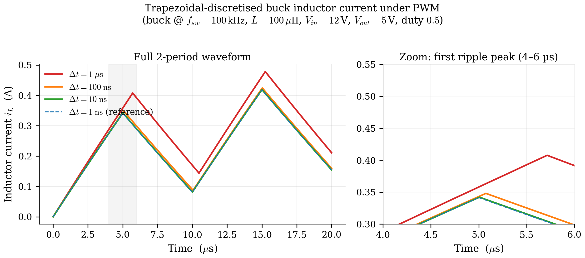

3. Trapezoidal Companion Discretisation¶
Chapter 2 ended with the continuous-time MNA system:
This chapter explains how Pulsim turns that ODE into a linear algebra problem solvable once per time step. The technique is classic: trapezoidal integration combined with the companion- model view of reactive elements. By the end you'll know:
- Why trapezoidal (vs forward/backward Euler, RK4, BDF)
- The discrete form \(\bigl(E - \tfrac{\Delta t}{2}A\bigr) \mathbf{x}_{n+1} = \bigl(E + \tfrac{\Delta t}{2}A\bigr) \mathbf{x}_n + \tfrac{\Delta t}{2}(B\mathbf{u}_n + B\mathbf{u}_{n+1})\) and how Pulsim restructures it for cacheability
- How \(\Delta t\) trades accuracy for runtime, and the practical
guidance Pulsim's
simulate(...)API gives
3.1 Why trapezoidal¶
There are dozens of ODE discretisation methods. Pulsim uses the trapezoidal rule (also called Crank-Nicolson in PDEs, or the average-of-Euler in some textbooks):
In words: estimate the derivative at the midpoint of the interval by averaging its endpoint values. Three properties make this the textbook choice for SMPS simulation:
- Second-order accurate. Local truncation error is \(O(\Delta t^3)\) per step → global error \(O(\Delta t^2)\). Forward/backward Euler are only first-order; RK4 is fourth-order but its 4 sub-stage assembly cost kills any benefit on a PWL system.
- A-stable. Trapezoidal damps unbounded oscillations regardless of \(\Delta t\) size, even for stiff systems. This matters because SMPS systems have time constants spanning \(\sim 10\text{ ns}\) (switch transitions) to \(\sim 100\text{ ms}\) (output capacitor charging). Backward Euler is also A-stable but only first-order; explicit RK methods need \(\Delta t < \tau_{\min}\) for stability.
- Symmetric. Trapezoidal is time-reversible (within round-off). For LC tank ringing — extremely common in SMPS — trapezoidal preserves energy over many cycles. Backward Euler adds artificial damping that distorts ringdown waveforms; RK4 adds even more.
The cost: trapezoidal is implicit — \(\mathbf{x}_{n+1}\) appears on both sides of the update. We pay one linear solve per step to handle that. The next sections show why that "cost" is actually the whole point.
3.2 Substituting trapezoidal into MNA¶
Start from the continuous descriptor form:
At the two endpoints of one step:
Average them to get \(E\) times the average derivative:
Replace the average derivative with the trapezoidal approximation \((\mathbf{x}_{n+1} - \mathbf{x}_n) / \Delta t\):
Multiply by \(\Delta t\) and collect \(\mathbf{x}_{n+1}\) on the left:
This is the trapezoidal companion form Pulsim uses end-to-end. Let:
- \(J \;=\; E - \tfrac{\Delta t}{2}A\) — the companion matrix on the left
- \(K \;=\; E + \tfrac{\Delta t}{2}A\) — the forward operator on the right
- \(\mathbf{b}_n \;=\; K\,\mathbf{x}_n + \tfrac{\Delta t}{2}(B\mathbf{u}_n + B\mathbf{u}_{n+1})\) — the per-step right-hand side
Then each step is exactly one linear solve:
The matrix \(J\) depends on the switch mask \(\mathbf{m}\) (because \(A\) does), but not on time within a mask. This is the critical observation that unlocks Chapter 4's caching strategy.
3.3 The companion-model view¶
A different lens on the same algebra, useful when you want to visualize what trapezoidal does to each reactive element:
For a capacitor with \(i_C = C\,\dot{v}_C\), the trapezoidal discretisation gives:
Read that as: at step \(n+1\), the capacitor looks like a conductance \(G_C = 2C/\Delta t\) in parallel with a Norton current source \(I_{C,n} = G_C \cdot v_{C,n} + i_{C,n}\) representing its history. Symbolically:
graph LR
A((node a)) -- "G_C = 2C/Δt" --- B((node b))
A -- "I_n (history)" --> BFigure 3.1 — The companion model for a capacitor at step \(n+1\) under trapezoidal integration. The capacitor is replaced by a conductance \(G_C = 2C/\Delta t\) in parallel with a history current source \(I_n\). Inductors get a dual model: a resistance \(R_L = 2L/\Delta t\) in series with a history voltage source.
Once every reactive element is replaced by its companion, the circuit is purely resistive at this step. You're solving \(G\,\mathbf{V} = \mathbf{I}_{\mathrm{inj}}\) exactly as in chapter 2 — no derivatives in sight. The history currents/voltages are constants you computed at the end of the previous step.
Pulsim does the matrix-level equivalent: it precomputes \(J\) once per mask, computes \(\mathbf{b}_n\) each step, and runs one solve. The companion-model view is helpful for intuition and for debugging (every textbook SPICE walkthrough uses it), but the matrix form is what actually executes.
3.4 What happens at a switch event¶
Mask changes happen between time steps in Pulsim: the simulator samples \(\mathbf{m}(t_n)\) at the start of each step and holds it constant through the step. When the mask changes from step \(n\) to step \(n+1\):
- The matrix \(J\) becomes \(J(\mathbf{m}_{n+1})\) — different sparsity values, same sparsity pattern (chapter 2 §2.6).
- The history term \(K\,\mathbf{x}_n\) is computed using \(K(\mathbf{m}_n)\) — the old mask's \(K\). Continuity of \(E\) guarantees the state \(\mathbf{x}_n\) is meaningful across the transition; only the elementwise derivative \(\dot{\mathbf{x}}\) discontinues.
- Pulsim either (a) looks up the pre-built \(J^{-1}_{(\mathbf{m}_{n+1})}\) factor from the PWL cache (chapter 4) or (b) updates the existing factor in-place via path-based partial refactor (chapter 7).
The "either (a) or (b)" choice is what the v1.3.0 release made fast. The cache amortises factorisation cost for masks visited more than once; the partial refactor amortises it for single-bit- flip transitions even on first encounter.
3.5 The \(\Delta t\) knob — accuracy vs runtime¶
Global error is \(O(\Delta t^2)\), so halving \(\Delta t\) quarters the error. Runtime is \(O(1/\Delta t)\) (linear in step count), so halving \(\Delta t\) doubles the wall time. The trade-off:
In practice Pulsim's pp.simulate(builder, t_end, dt) lets you
pick \(\Delta t\) directly. Guidance from the showcase notebooks:
| Workload | Recommended \(\Delta t\) | Why |
|---|---|---|
| Buck @ \(f_{\mathrm{sw}} = 100\text{ kHz}\) steady state | \(100\text{ ns}\) | \(\Delta t / T_{\mathrm{sw}} = 1\%\); captures inductor ripple cleanly |
| Same buck under PWM transitions | \(20\text{ ns}\) | Catch switching edges within \(\sim\) 1-2 steps |
| MMC @ \(f_{\mathrm{sw}} = 10\text{ kHz}\) steady state | \(1\text{ µs}\) | Larger \(\Delta t\) ok because dynamics are slower per cycle |
| LDO loop study | \(10\text{ ns}\) | Op-amp poles often \(> 1\text{ MHz}\); smaller \(\Delta t\) avoids aliasing the loop |

Figure 3.2 — Buck-converter inductor current \(i_L(t)\) over one
switching period at \(\Delta t = 1\text{ µs}, 100\text{ ns},
10\text{ ns}, 1\text{ ns}\). The \(1\text{ µs}\) trace misses the
ripple peak by \(\sim 8\%\); the \(100\text{ ns}\) trace is within
\(0.1\%\) of the converged \(1\text{ ns}\) reference. Pulsim's
default simulate(...) recommendation of \(\Delta t = 100\text{ ns}\)
for 100 kHz workloads is calibrated against this kind of
convergence study.
3.6 Connection to the rest of the pipeline¶
The trapezoidal companion form \(J\mathbf{x}_{n+1} = \mathbf{b}_n\) is what every downstream chapter operates on:
- Chapter 4 caches \(J\) per switch mask — assemble once, factorise once, look up forever.
- Chapter 5 explains how to factorise a sparse \(J\) efficiently (RCM + Gilbert-Peierls).
- Chapter 6 is Pulsim's in-house implementation of that
factorisation (
PulsimSparseLuSolver). - Chapter 7 is the algorithmic contribution: when the mask changes by one bit, update \(J\)'s LU factors along the etree path of the affected column instead of recomputing them.
- Chapter 8 measures all of it.
The "linear solve per step" framing is what unifies the entire doc set.
3.7 Where this lives in the codebase¶
| Concept | Header | Notes |
|---|---|---|
| Trapezoidal companion assembly | core/include/pulsim/pwl/assemble.hpp assemble_segment(...) |
Builds \(J\) and \(\mathbf{b}_{\mathrm{constant}}\) given a mask and \(\Delta t\) |
Per-step solve(mask, b_extra, x) |
core/include/pulsim/pwl/cache.hpp PwlStateSpaceCache::solve(...) |
The hot loop's entry point |
| History term update | core/src/run_transient.cpp |
Mostly handled implicitly by the cache: stores \(E + (\Delta t/2) A\) pre-applied |
| The companion-model view of capacitors / inductors | core/include/pulsim/pwl/dc_assemble.hpp |
Same stamps, \(\Delta t = \infty\) for DC OP |
3.8 Takeaways¶
- The trapezoidal rule turns the continuous descriptor form \(E\dot{\mathbf{x}} = A\mathbf{x} + B\mathbf{u}\) into the discrete linear system \(J\mathbf{x}_{n+1} = \mathbf{b}_n\) with \(J = E - \tfrac{\Delta t}{2}A\).
- Per-step work is exactly one sparse linear solve: assemble \(\mathbf{b}_n\) (cheap, vector ops only) + solve \(J\mathbf{x}_{n+1} = \mathbf{b}_n\) (the bulk of the cost).
- \(J\) depends on the switch mask but not on time within the mask. Caching \(J\)'s LU factors per mask (chapter 4) is legitimate.
- \(\Delta t\) trades quadratic accuracy for linear runtime; Pulsim's defaults are calibrated for 1% accuracy at typical SMPS switching frequencies.
3.9 Further reading¶
- Trapezoidal in circuit simulation — Pillage, Rohrer & Visweswariah, Electronic Circuit and System Simulation Methods, McGraw-Hill 1995, §6 covers the companion-model derivation in textbook detail.
- A-stability and circuit stiffness — Hairer & Wanner, Solving Ordinary Differential Equations II: Stiff and Differential- Algebraic Problems, Springer 1996. The reference for why trapezoidal vs BDF vs RK matters under stiffness.
- In Pulsim —
core/tests/layer4_v1/test_trapezoidal_companion.cpphas the unit tests that verify the discretisation produces the expected analytic answers on RC and LC tanks. - In this doc set — Chapter 4 — PWL State-Space Cache is where \(J\) becomes a cached, per-mask asset that the hot loop just looks up.